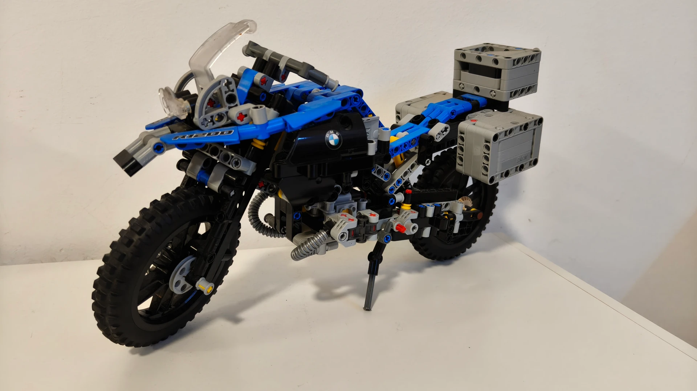
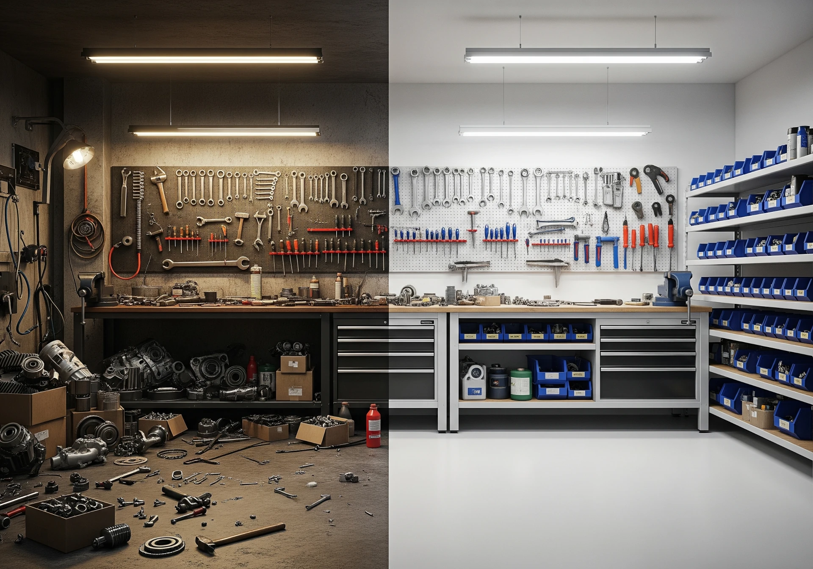
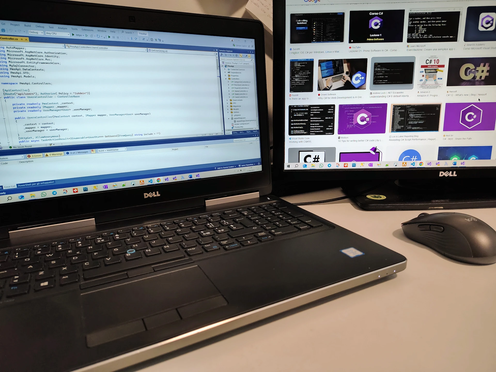

L'ultimo arrivato in officina
Finestre rotte e Boy Scout rule: la cura che fa durare le cose
230.000 km in moto e un codice che non invecchia mai davvero. Scopri perché la cura del dettaglio e la manutenzione costante sono le uniche armi contro il degrado, nel software come nella vita di tutti i giorni.
Tutti gli articoli
Fail fast e guard clauses: basta arrow code
Il codice a forma di freccia distrugge la leggibilità. Scopri come le guard clauses azzerano il carico cognitivo.
Leggi l'articolo
Dependency injection: smetti di saldare i tuoi oggetti
Il "new" è il nemico della manutenibilità. Rendi il tuo codice flessibile come un carrello degli attrezzi.
Leggi l'articolo
Composition over inheritance: i LEGO vincono
Meglio una struttura rigida o componenti assemblabili? Evita il problema del gorilla e la banana.
Leggi l'articolo
Interfacce vs classi astratte: guida alla scelta
Telaio saldato o adattatore universale? Scegli lo strumento giusto per il tuo codice C#.
Leggi l'articolo
Polimorfismo in C#: guida al codice flessibile
Impara a usare virtual, override e interfacce per scrivere codice robusto che si adatta ai cambiamenti.
Leggi l'articolo
Ereditarietà in C#: l'arte di riutilizzare il codice
Impara a creare gerarchie di classi. Scopri la relazione "is-a" e quando preferire la composizione.
Leggi l'articolo
Incapsulamento in C#: proteggere il codice
Usa proprietà e modificatori di accesso per scrivere codice sicuro e nascondere la complessità interna.
Leggi l'articolo
Costruttori in C#: inizializzare oggetti da pro
Guida completa per creare oggetti validi sin dalla nascita e prevenire le NullReferenceException.
Leggi l'articolo
Dati, variabili e conversioni in C#
Guida pratica ai tipi di dati e alle conversioni. Impara a gestire numeri, stringhe e booleani.
Leggi l'articolo
Organizzare i metodi nelle classi C#
Tecniche ed esempi per scrivere classi ordinate e scalabili disponendo i metodi con criterio.
Leggi l'articolo
Metodi in C#: guida completa
Cosa sono, come funzionano e perché sono i mattoni fondamentali del tuo software professionale.
Leggi l'articolo
Classi e oggetti in C#: guida base
Inizia a pensare da architetto software capendo come modellare la realtà dentro al codice.
Leggi l'articolo
Cos'è C# e perché sceglierlo
Un'introduzione concreta a C# per chi vuole costruire sistemi robusti con strumenti professionali.
Leggi l'articolo
Perché ho scelto C# per diventare architetto
Una scelta tecnica e personale: perché ho puntato su questo linguaggio per la mia carriera.
Leggi l'articoloNessun articolo trovato per questa ricerca.
Prova a cercare qualcos'altro, come "classi", "metodi" o "interfacce".